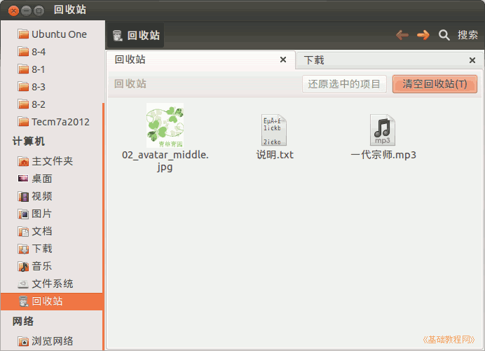

2011-2012 第一学期七年级电脑操作教学设计
作者：TeliuTe 来源：基础教程网
十七、学会文件类型 返回目录 下一课
（一）教学设计
1、学习目标：学会文件类型
2、注意事项：可以考虑把下载的文件名改一下？改成对应的名称“文本文件.txt”
3、教学过程：
1）教师准备学案和板书；
2）学生整队进入，开机抄黑板上笔记；
3）教师讲解板书演示操作；
4）学生打指法、日志、完成操作；
5）教师打勾记录学生指法成绩，检查日志和操作；
注：学生抄完笔记就开始打指法、日志，老师讲完后再继续完成；
（二）板书设计(学生笔记)
第17课 学会文件类型
1、文件种类：文本，图片，媒体，程序
2、到校园网，软件，Linux里点右键另存“说明.txt”
3、到校园网，首页，头像右键另存
4、到校园网，音乐欣赏， music,另存“一代宗师”
5、都右键移到回收站
操作图示：

（三）课后记 2012-11-02 18:39
--
讲完自己照着操作说明来玩模拟器小游戏
明天期中考试，今天居然没占课
--
找一个文本、图片、音乐下载下来
然后再移动到回收站里，把上节的删除操作一下
--
学生居然会用聊天程序传日志，还是私聊
本来想着日志加上“自己可见”，可以杜绝复制
--
看来学生脑瓜还是挺聪明的
如果卸载了聊天，可能还有别的网络方法来
--
本想着把几个文件都讲解一下，
结果后面两节着急的一带而过，后面有机会再说了
--
课调回来了，结果等了几分钟学生没来
想着是不是明天期中考试，又占课了
--
打电话问了下，原来是调课了学生还不知道
都在上自习，急急忙忙上来，要是不电话又荒过去了
--
指法没抽背，等明天期中考试完了
下周再接着抽，要不弄的学生太紧张了
返回目录 下一课
本教程由86团学校TeliuTe制作|著作权所有
基础教程网：http://teliute.org/
美丽的校园……
转载和引用本站内容，请保留作者和本站链接。